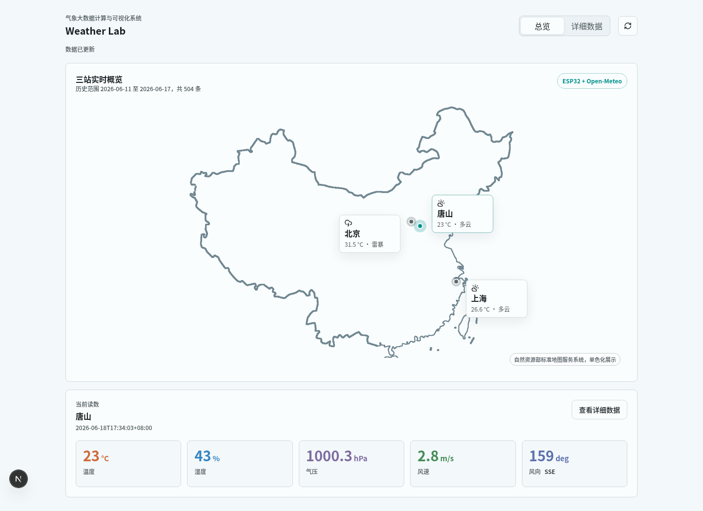
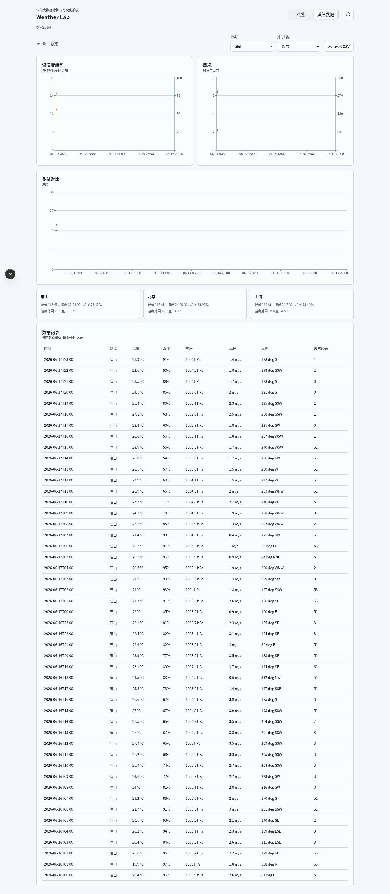
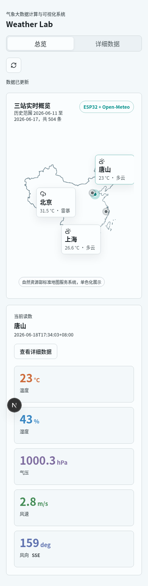

气象大数据采集、分析与可视化系统实验报告
一、项目目标与完成范围
本课程设计实现一个气象大数据采集、传输、存储、计算与可视化系统。系统固定展示唐山、北京、上海三个站点，保留课程要求中的 HBase、HDFS、Hive、Spark 链路，并按《Weather Lab 气象大数据计算与可视化系统设计文档》将 Web 层实现为 FastAPI + Next.js。
系统按设计文档补齐了在线采集服务：ESP32-C3 通过 Wi-Fi 接入手机热点后，在 8080 端口提供 TCP CSV 数据；Python 采集服务连接 ESP32，合并 Open-Meteo 当前气压、风速、风向和天气代码，并把实时记录写入 HBase 与 HDFS。当前实物已验证 DHT11 在 GPIO4 可稳定读取温湿度，热点互访能力已验证，ESP32 气象站 TCP 服务已输出真实温湿度样本。
系统完成范围如下：
| 模块 | 设计要求 | 当前实现 |
|---|---|---|
| 硬件采集 | ESP32-C3 + DHT11 采集唐山温湿度 | 已提供 Wi-Fi/TCP 气象站脚本；实物 DHT11 在 GPIO4 读取到 24 摄氏度、37% 到 38% 湿度 |
| 当前气象补充 | Open-Meteo 当前天气接口 | 已生成三站当前数据 |
| 历史数据 | Open-Meteo Historical Weather API | 已生成 2026-06-11 至 2026-06-17 三站小时数据 |
| HDFS | /weathertextdb | 已上传本项目历史 CSV；在线采集服务支持批量追加实时 CSV |
| Hive | 外部表 weather_table | 已按 /weathertextdb 建表并查询 |
| Spark | Hive 表输入、YARN 提交、10 秒窗口均值 | 已支持 --source hive、--master yarn、/weather_analysis/window_mean 和 /weather_10secmean |
| HBase | realtime_weather，列族 data，短期 TTL | 已写入三站当前数据；脚本设置 TTL 为 150 秒 |
| Web API | FastAPI | 已提供设计文档接口；当前数据优先读取 HBase，失败时回退到实时 CSV 和本地 JSON |
| 前端 | Next.js、shadcn/ui、Recharts | 已重建为总览页和详细数据页 |
二、系统总体架构
系统数据流分为实时链路和历史分析链路。
实时链路中，唐山站温湿度来自 ESP32-C3 与 DHT11，服务器侧再合并 Open-Meteo 的气压、风速、风向和天气代码；北京、上海当前数据由 Open-Meteo 提供。在线采集服务把唐山实时记录写入 HBase 表 realtime_weather 与 HDFS，离线当前数据脚本可把三站当前快照写入同一张 HBase 表，FastAPI 将其作为总览页站点读数的优先来源。
历史分析链路中，Open-Meteo 历史小时数据写入 HDFS /weathertextdb，Hive 外部表 weather_table 引用该目录，Spark 从 HDFS 读取数据并输出统计摘要和时间序列。Next.js 前端通过 FastAPI 接口读取当前数据、趋势数据、摘要和原始记录。
ESP32-C3 + DHT11
|
| Wi-Fi TCP CSV
v
Python 采集服务
|
|---------------------> HBase realtime_weather
| |
| v
| FastAPI 当前数据
|
Open-Meteo Historical Weather API / 实时批量 CSV
|
v
HDFS /weathertextdb
|
v
Hive weather_table
|
v
Spark on YARN 分析任务
|
v
HDFS /weather_analysis/* 和 /weather_10secmean
|
v
FastAPI 分析数据
|
v
Next.js 可视化界面三、数据来源与数据模型
3.1 站点设置
系统固定三个站点：
| 站点 | station_id | 纬度 | 经度 | 当前数据来源 |
|---|---|---|---|---|
| 唐山 | tangshan | 39.63 | 118.18 | ESP32 温湿度 + Open-Meteo |
| 北京 | beijing | 39.90 | 116.40 | Open-Meteo |
| 上海 | shanghai | 31.23 | 121.47 | Open-Meteo |
ESP32 的正式演示路径为 Wi-Fi/TCP。USB 串口仅用于刷写、上传脚本和读取调试日志；在热点异常时，esp32/usb_weatherstation_main.py 可作为保底采样方式。
3.2 Open-Meteo 字段映射
| Open-Meteo 字段 | 系统字段 | 单位 |
|---|---|---|
temperature_2m | temperature | 摄氏度 |
relative_humidity_2m | humidity | % |
surface_pressure | pressure | hPa |
wind_speed_10m | wind_speed | m/s |
wind_direction_10m | wind_direction | 度 |
weather_code | weather_code | WMO 天气代码 |
统一记录格式如下：
collect_time,station_id,station_name,temperature,humidity,pressure,wind_speed,wind_direction,weather_code本次历史数据范围为 2026-06-11 至 2026-06-17，三站共 504 条小时记录，即 3 个站点 × 7 天 × 24 小时。
四、采集与存储实现
4.1 ESP32-C3 与 DHT11
硬件设计按设计文档保留：
| DHT11 | ESP32-C3 |
|---|---|
| VCC | 3.3V |
| GND | GND |
| DATA | GPIO4 |
仓库中保留两类 ESP32 程序：
- esp32/weatherstation_main.py：面向网络传输的气象站脚本。
- esp32/usb_weatherstation_main.py：USB 串口传输脚本，便于在热点不可用时完成本机采集。
上传网络气象站脚本的命令如下，热点密码通过环境变量传入，不写入仓库：
ESP32_SSID=prometheus ESP32_WIFI_KEY=abcdefgh ./scripts/upload-esp32-weatherstation.shESP32 启动后连接热点并监听 TCP 8080，向采集服务发送如下格式：
tangshan,唐山,24,38,1最后一列为 ESP32 侧递增样本号，用于在页面上证明数据来自连续实时采样。DHT11 本身为整数级温湿度传感器，页面以一位小数统一展示格式，但不声称具备小数级测量精度。
本次实物检查中，GPIO4 上的 DHT11 返回 24 至 26 摄氏度、32% 到 60% 湿度；电脑与 ESP32 处在同一热点时，可以通过 TCP 建立连接，说明热点不存在 AP 隔离。最终联调使用 prometheus 热点和新密码 abcdefgh，ESP32 获得 172.21.7.75，气象站服务从 TCP 8080 输出 tangshan,唐山,25,32,5 等 CSV 记录。
4.2 在线采集服务
在线采集服务位于 backend/scripts/weather_dataserver.py。它连接 ESP32 的 TCP 服务，接收温湿度 CSV，并合并 data/raw/current_weather.json 中的 Open-Meteo 当前气象字段，形成统一九列记录：
collect_time,station_id,station_name,temperature,humidity,pressure,wind_speed,wind_direction,weather_code启动命令如下：
python backend/scripts/weather_dataserver.py --station-host <ESP32_IP>采集服务的写入目标如下：
| 目标 | 写入方式 |
|---|---|
| 本地实时 CSV | 追加到 data/raw/live_weather_observations.csv，保留 ESP32 样本号 |
| HDFS | 批量写入课程兼容 7 列 /weathertextdb/live_*.csv |
| HBase | 写入 realtime_weather，列族 data，TTL 150 秒 |
4.3 HDFS 与 Hive
历史 CSV 上传到设计文档要求的 HDFS 路径：
./scripts/upload-weather-to-hdfs.sh data/raw/weather_observations.csv上传后 /weathertextdb 中只保留本项目文件：
/weathertextdb/weather_observations.csvHive 外部表直接引用 /weathertextdb：
CREATE EXTERNAL TABLE weather_table (
collect_time STRING,
station_id STRING,
station_name STRING,
temperature DOUBLE,
humidity DOUBLE,
pressure DOUBLE,
wind_speed DOUBLE,
wind_direction DOUBLE,
weather_code INT
)
ROW FORMAT DELIMITED
FIELDS TERMINATED BY ','
LOCATION '/weathertextdb';验收查询结果显示三个站点记录数一致：
| 站点 | 记录数 |
|---|---|
| 上海 | 168 |
| 北京 | 168 |
| 唐山 | 168 |
4.4 Spark 分析
Spark 分析脚本支持两种输入：本地验证时直接读取 /weathertextdb 中的 CSV；课程展示时通过 Hive 表 weather_table 读取 HDFS 原始数据，并在 YARN 上运行。脚本按 10 秒窗口计算均值，同时输出设计文档路径和课程兼容路径：
| 输出路径 | 含义 |
|---|---|
/weather_analysis/window_mean | 10 秒窗口均值序列 |
/weather_analysis/summary | 站点统计摘要 |
/weather_10secmean | 课程指导文档兼容路径 |
运行命令：
./scripts/create-hive-weather-table.sh
./scripts/run-spark-analysis-yarn.shSpark 汇总结果如下：
| station_id | 站点 | 记录数 | 平均温度 | 最低温度 | 最高温度 | 平均湿度 | 平均气压 | 平均风速 |
|---|---|---|---|---|---|---|---|---|
| beijing | 北京 | 168 | 24.89 | 16.7 | 33.3 | 63.98 | 1001.99 | 1.61 |
| shanghai | 上海 | 168 | 24.70 | 19.6 | 34.5 | 73.49 | 1009.44 | 2.61 |
| tangshan | 唐山 | 168 | 22.91 | 15.7 | 30.1 | 76.42 | 1004.01 | 2.28 |
4.5 HBase 当前表
当前数据写入 HBase 表 realtime_weather，列族为 data，行键格式为：
station_id_timestamp示例行键：
tangshan_20260618173403生成并写入 HBase 的命令：
uv run python backend/scripts/build_hbase_current_script.py \
data/raw/current_weather_combined.csv \
data/processed/hbase_current_weather_puts.hbase
./scripts/distro-bigdata.sh "hbase shell -n $PROJECT_ROOT/data/processed/hbase_current_weather_puts.hbase"HBase scan 已返回实时记录，包含 data:temperature、data:humidity、data:pressure、data:wind_speed、data:wind_direction、data:weather_code 等列。在线采集服务和离线当前数据写入脚本均使用同一张表，并设置实时列族 TTL 为 150 秒。
五、FastAPI 接口实现
FastAPI 只负责数据接口，不再托管静态前端。Next.js 通过 rewrite 代理访问 FastAPI，开发时默认端口如下：
| 服务 | 地址 |
|---|---|
| FastAPI | http://127.0.0.1:8008 |
| Next.js | http://127.0.0.1:3000 |
主要接口按设计文档对齐。/api/stations/current 会优先尝试读取 HBase 当前表；当 HBase Thrift 不可用时，回退到在线采集 CSV，再回退到本地合并 JSON，从而保证演示环境和开发环境都可运行。
| 接口 | 用途 |
|---|---|
GET /api/stations/current | 总览页地图点位和当前五指标 |
GET /api/stations/{station_id}/live?seconds=150 | 最近实时序列 |
GET /api/analysis/trends | 详细数据页趋势和多站对比 |
GET /api/analysis/summary | 统计摘要 |
GET /api/records | 原始记录表 |
GET /api/export/weather_observations.csv | CSV 导出 |
验收结果显示：
- 当前站点接口返回 3 个站点。
- 指标接口返回 5 个指标：温度、湿度、气压、风速、风向。
- 唐山气压趋势返回 168 个小时点。
- 唐山 CSV 导出返回 168 条记录。
六、Next.js 可视化实现
前端已从旧的静态 HTML/Canvas 实现改为 Next.js。页面数量按设计文档收敛为两个：
- 总览：中国轮廓地图、站点点位、当前站点五指标读数。
- 详细数据：站点筛选、指标筛选、趋势图、统计摘要、三站对比和数据记录表。
UI 组件按 shadcn/ui 的本地组件方式组织，包含 Button、Card、Select 等基础组件。图表使用 Recharts，图表线条细、网格弱化、颜色只用于指标区分。页面使用浅色、低噪声的数据工作台风格，控件圆角不超过 8px，保留 reduced motion 支持，不使用 emoji、深蓝大屏风格或高饱和渐变。
地图层从自然资源部标准地图服务系统页面加载的中国地图图片中提取轮廓，保留原始资源文件并生成透明背景单色版用于前端展示；站点不再使用手写百分比，也不再用粗略线性经纬度投影，而是按这张官方轮廓图校准北京、唐山、上海三个城市锚点。北京位于华北平原北缘，唐山位于北京以东、渤海湾西北侧，上海位于长江口附近；窄屏下仅调整标签方向，点位本身保持不变。

图 6-1 Next.js 总览页
总览页以地图为第一视觉层，三个站点点位可点击切换。唐山站当前读数显示温度、湿度、气压、风速和风向，数据来源标记为 ESP32 + Open-Meteo。页面额外显示 ESP32 实时采样 区块，包含最新采样时间、样本号、近 5 分钟记录数和最近若干条温湿度，自动刷新周期为 1 秒。

图 6-2 Next.js 详细数据页
详细数据页使用 Recharts 绘制温湿度趋势、风况趋势和多站同指标对比。下方统计摘要展示三站记录数、均温、均湿和温度范围；ESP32 实时采样 区块展示最近 TCP 采集记录和样本号，记录表展示当前站点最近 48 条小时记录。

图 6-3 窄屏总览页
窄屏下，页签、刷新按钮、地图、指标卡均改为单列布局。站点标签经过单独位置调整，避免唐山、北京点位接近时标签重叠或被裁切。
七、运行与验收
启动 Web 演示：
./scripts/run-web.sh该脚本会启动 FastAPI 和 Next.js。默认访问地址：
http://127.0.0.1:3000完整验收命令：
./scripts/verify-full.sh最终验收结果：
| 检查项 | 结果 |
|---|---|
| 设计覆盖入口 | verify-design-coverage.sh 通过 |
| 本地历史数据 | 504 条 |
| 当前站点数据 | 3 个站点 |
| HDFS 输入 | /weathertextdb/weather_observations.csv 存在 |
| Spark 输出 | /weather_analysis/summary、/weather_analysis/window_mean、/weather_10secmean |
| Hive 查询 | 三站各 168 条 |
| HBase scan | realtime_weather 返回实时记录，列族 TTL 150 秒 |
| FastAPI 当前/摘要/趋势接口 | 通过 |
| Next.js 页签 | 2 个 |
| 站点点位 | 3 个 |
| Recharts 图表 | 3 个 |
| 记录表 | 48 行 |
| 浏览器控制台错误 | 0 个 |
八、结论与限制
本项目已经按设计文档补齐主要能力：ESP32 气象站脚本、在线采集服务、HBase/HDFS 双写、Hive 表、Spark on YARN 10 秒窗口均值、FastAPI 数据接口和 Next.js 可视化。大数据链路使用 /weathertextdb、weather_table、realtime_weather、/weather_analysis/* 和 /weather_10secmean；Web 层改为 FastAPI + Next.js，前端不再使用静态 HTML/Canvas，也不再保留设计文档以外的多余实现页面。
本次实机联调已经完成 ESP32 main.py -> weather_dataserver.py -> 本地实时 CSV -> HDFS/HBase 路径验证。ESP32 在 WPA2 手机热点 prometheus 下使用密码 abcdefgh 可连接并获得 172.21.7.75；连接过程中串口日志曾短暂出现 status=202，但随后正常进入 GOT_IP，因此调试时应以完整超时窗口后的最终状态为准。剩余风险主要是演示现场热点环境变化导致 IP 变化，展示前需要重新确认 ESP32 串口日志中的 IP 地址。